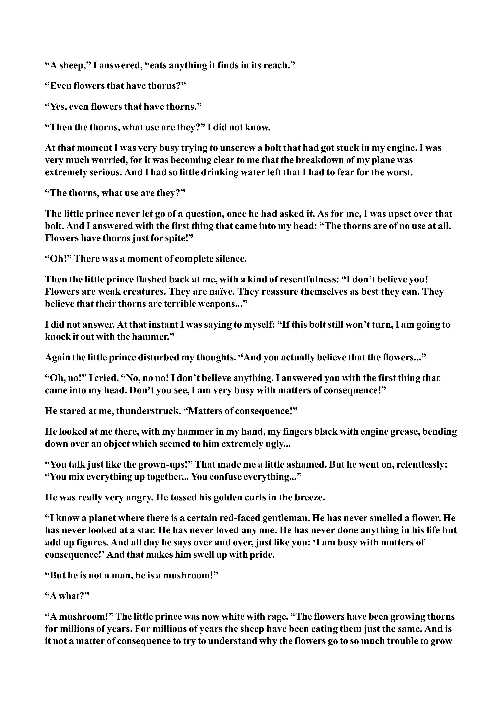

“A sheep,” I answered, “eats anything it finds in its reach.” “Even flowers that have thorns?” “Yes, even flowers that have thorns.” “Then the thorns, what use are they?” I did not know. At that moment I was very busy trying to unscrew a bolt that had got stuck in my engine. I was very much worried, for it was becoming clear to me that the breakdown of my plane was extremely serious. And I had so little drinking water left that I had to fear for the worst. “The thorns, what use are they?” The little prince never let go of a question, once he had asked it. As for me, I was upset over that bolt. And I answered with the first thing that came into my head: “The thorns are of no use at all. Flowers have thorns just for spite!” “Oh!” There was a moment of complete silence. Then the little prince flashed back at me, with a kind of resentfulness: “I don’t believe you! Flowers are weak creatures. They are naive. They reassure themselves as best they can. They believe that their thorns are terrible weapons...” I did not answer. At that instant I was saying to myself: “If this bolt still won’t turn, I am going to knock it out with the hammer.” Again the little prince disturbed my thoughts. “And you actually believe that the flowers...” “Oh, no!” I cried. “No, no no! I don’t believe anything. I answered you with the first thing that came into my head. Don’t you see, I am very busy with matters of consequence!” He stared at me, thunderstruck. “Matters of consequence!” He looked at me there, with my hammer in my hand, my fingers black with engine grease, bending down over an object which seemed to him extremely ugly... “You talk just like the grown-ups!” That made me a little ashamed. But he went on, relentlessly: “You mix everything up together... You confuse everything...” He was really very angry. He tossed his golden curls in the breeze. “I know a planet where there is a certain red-faced gentleman. He has never smelled a flower. He has never looked at a star. He has never loved any one. He has never done anything in his life but add up figures. And all day he says over and over, just like you: ‘I am busy with matters of consequence!’ And that makes him swell up with pride. “But he is not a man, he is a mushroom!” “A what?” “A mushroom!” The little prince was now white with rage. “The flowers have been growing thorns for millions of years. For millions of years the sheep have been eating them just the same. And is it not a matter of consequence to try to understand why the flowers go to so much trouble to grow
